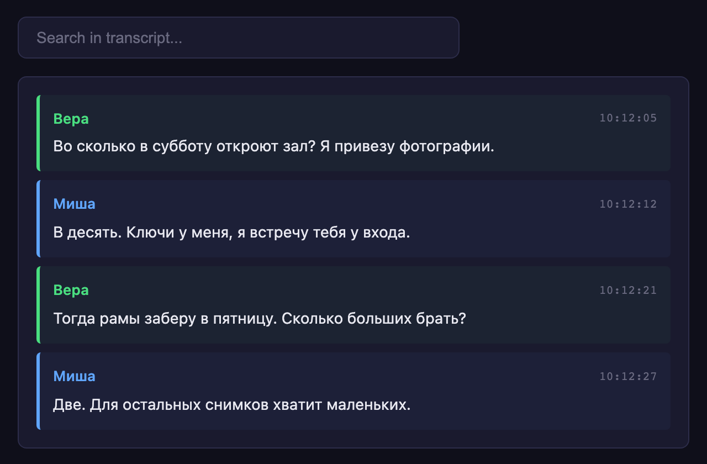
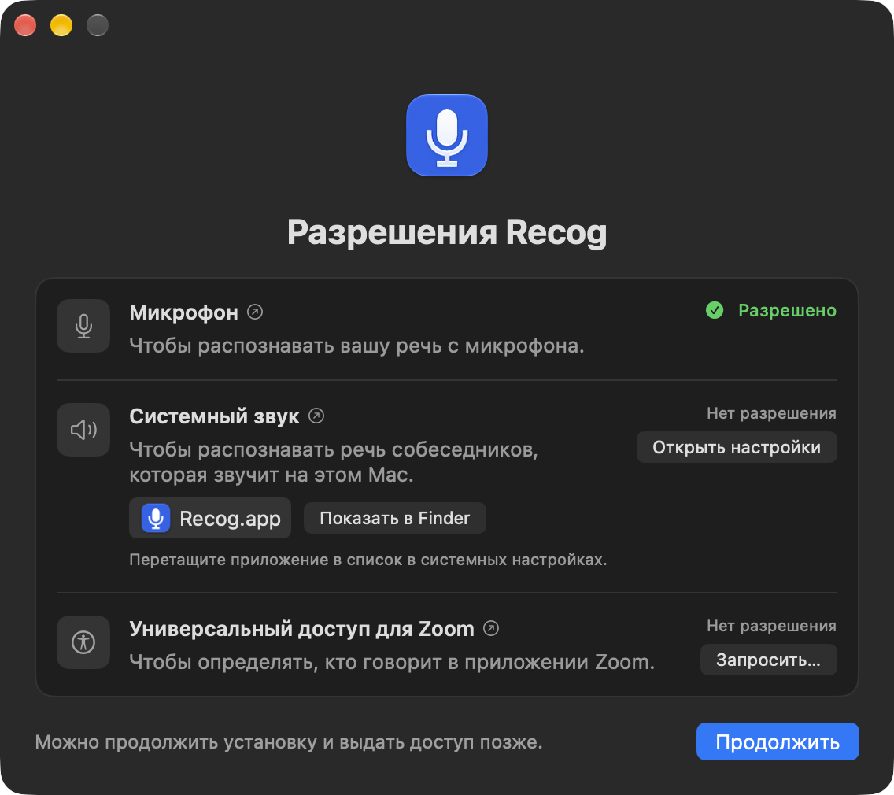

Кто что сказал
на встрече
Читайте расшифровку по ходу звонка. Recog распознаёт русскую речь и подписывает реплики именами из конференции.
macOS 13 и новее · Apple Silicon
Как работает Recog
Для звонков в KTalk, Jitsi, Google Meet и Zoom.
 Recog
Recog
Модель GigaAM переводит речь в текст. Recog сопоставляет реплики с тем, кто говорил.
Расшифровка встречи
У каждой реплики есть имя и время. После звонка можно найти нужную фразу поиском и скопировать её.
По умолчанию распознавание идёт на вашем компьютере. Запись начинается при входе во встречу и заканчивается при выходе. Предупредите участников о записи.
Спросите агента о прошлых встречах
Ваш вопрос
«У кого ключи от зала для фотовыставки?»
Поиск по встречам
Со скиллом из комплекта Recog агент Claude Code или Codex ищет реплики в сохранённых расшифровках по словам, датам и участникам.

Установить скилл для Claude Code и Codex
npx -y skills add materkey/recog@recog-meetings -g -a claude-code codex -y
Откройте новый сеанс Claude Code или Codex в любой папке и спросите о встрече. Для установки нужен Node.js с npx, для поиска по встречам — uv.
Установка
Mac с Apple Silicon
- Скачайте образ для Mac и перетащите Recog в «Программы».
- Откройте Recog, запустите настройку и разрешите доступ к микрофону и системному звуку.
- Нажмите «Открыть встречи». Расшифровки открываются в браузере по адресу 127.0.0.1:9080.
Если macOS блокирует запуск
После первой попытки открыть Recog перейдите в «Системные настройки» → «Конфиденциальность и безопасность». Рядом с Recog нажмите «Всё равно открыть».
Расширение для звонков в Chrome
В chrome://extensions включите «Режим разработчика». Нажмите «Загрузить распакованное расширение» и выберите папку, которую покажет Recog.
Linux x86-64
Ubuntu 24.04+, Debian 13+, Arch Linux и Manjaro. Выполните в терминале от своего пользователя:
curl -fsSL https://recog.vkkovalev.work/install.sh | sh
Команда подключит репозиторий Recog к apt или pacman, установит пакет и настроит его. В конце расшифровки откроются в браузере. Позже их открывает пункт «Recog» в меню приложений или адрес 127.0.0.1:9080.
Recog обновляется вместе с системой: sudo apt upgrade или sudo pacman -Syu. Установка без скрипта и удаление

